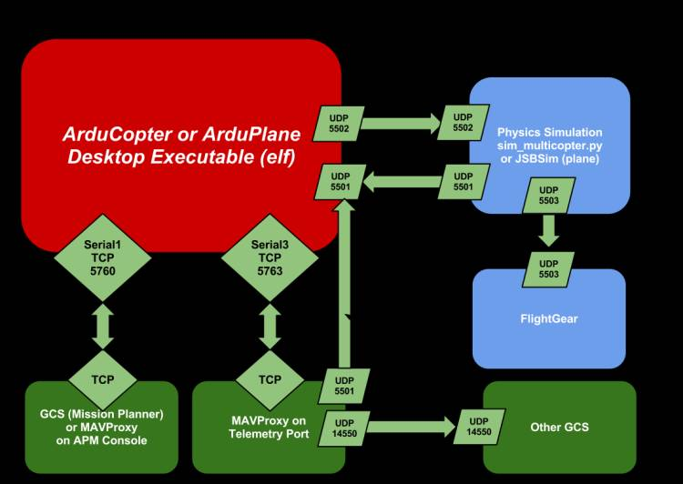

ArduPilot Notes
29 Dec 2020
ArduPilot can be built for a lot of different platforms and generally rivals what comercial companies can make.
Really, we are going to use a bunch of different programs in concert to do this:

Python
- Setup:
pip install -U pymavlink pyserial dronekit MAVProxy
ArduPilot
- Setup Linux instructions
- Get code:
git clone https://github.com/ArduPilot/ardupilot.gitcd ardupilotgit submodule update --init --recursive./waf configure --board sitl
wafis the primary tool for compiling the code- ArduCopter is for quadcopters
- SITL or software in the loop is what I am starting off with
- flight mode: different ways to control the drone … ref
GUIDED: are step-by-step mode, where things can change based on sensor inputs. The python script is responsible for monitoring the copter and allows custom functionality that isn’t available out of the box from ArduPilotAUTO: enter an entire mission like “surveying a field” where everything is preplaned from start to finish
sim_vehicle.pyinardupilot/Tools/autotestwill build then launch our SITL quadcopter- This tool calls
wafwhen you request things that haven’t been compiled yet sim_vehicle.py --map --console -v ArduCopter- If the code hasn’t been compiled yet, it will be now
- map: tracks vehicle on map
- To see satellite imagery: view -> MicrosoftHybrid
- console: telemetry battery, ARM, GPS, etc
mode GUIDEDarm throttletakeoff 10- launch to 10m altitude, can click on map with mouse to send it places
mofr LAND- Will immediately land and disarm the throttle
- This tool calls
- Parameters that change how ArduPilot behaves and can also simulation different things in SITL
- Complete list of parameters here
- MAVProxy commands:
param show <PARAM>orparam set <PARAM> -param show rtl_alt->RTL_ALT 140.0-param set sim_gps_disable 1` to simulate GPS failing
MAVProxy
- MAVProxy is a python command line tool for SITL
- Manual launching:
mavproxy.py --master tcp:127.0.0.1:5700 - To manually launch these, do:
- Start SITL vehicle:
./ardupilot -S -I0 --home -35.363261, 149.165230,584,353 --model "+" --speedup 1 --defaults /home/kevin/apm/copter.parm - GCS:
mavproxy.py --master tcp:127.0.0.1:5760
- Start SITL vehicle:
- MAVProxy commands: type help to see them all
velocity x y z(m/s)takeoff z(m)arm throttlegets vheicle ready to take commands and flysetyaw angle alt ref- ref 0 absolute angle based on compass
- ref 1 relative angle
Ground control station (GCS)
- QGroundControl is a visual GCS
- Install:
sudo apt install gstreamer1.0-plugins-bad gstreamer1.0-libav gstreamer1.0-gl -y - Download AppImage here
- Make executable with:
chmod a+x QGroundControl.AppImage
- Make executable with:
- To linkin QGC, change above to:
mavproxy.py --master tcp:127.0.0.1:5760 --out udp:127.0.0.1:14550 - Now QGC will connect to SITL
- You can change the connect path by going to commlinks -> entering the tcp 127.0.0.1 5763
- Install:
sim_vehicle.pyautomates the above, you don’t need to do it all by hand- launches MAVProxy
- Now QGC will connect automagically because all of the connects are setup
MAVLink
- MAVLink is a communication protocol
- Common messages
- Frame is 8 - 263 bytes: [header][payloadLength][packetSequence][systemID][componentID][data][checksum]
- Header is
0xFE - sequence counts up
- SystemID: 1-drone, 255-GCS
- compenetID is typically 0 and not used much
Dronekit
- Dronekit
- Install:
pip install dronekit - Examples
- Attributes allow you to set and get things about the vehicle that is running
- These are not instant, the request needs to get packaged up and sent via MAVLink to the vehicle
command()- Velocity commands need to be sent every second
- Install:
Guided Mode Example
#!/usr/bin/env python3
# myscript.py
from dronekit import connect, VehicleMode, LocationGlobalRelative, APIException, Command
import dronekit_sitl
import socket
import time, math
from pymavlink import mavutil # standard messages
def connectMyCopter(ip=None):
if ip is None:
# automate starting a SITL vehicle
sitl = dronekit_sitl.start_default()
ip = sitl.connection_string()
vehicle = connect(ip, wait_ready=True)
vehicle.parameters["GPS_TYPE"] = 3
return vehicle
def arm_and_takeoff(targetHeight):
while vehcile.is_armable != True:
time.sleep(1)
vehicle.mode = VehicleMode("GUIDED")
while vehicle.mode != "GUIDED":
time.sleep(1)
vehicle.armed = True
while vehicle.armed == False
time.sleep(1)
vehicle.simple_takeoff(targetHeight) # meters
while True:
if vehicle.location.global_relative_frame.alt >= 0.95*targetHeight:
break
time.sleep(1)
print("Altitude reached: {targetHeight}m")
return None
def get_distance_meters(tloc, cloc):
dLat = tloc.lat - cloc.lat
dLon = tloc.lon - cloc.lon
return math.sqrt(dLat**2 + dLon**2) * 1.113195e5
def goto(targetLocation):
distanceToTargetrLocation = get_distance_meters(targetLocation, vehicle.location.global_relative_frame)
vehicle.simple_goto(targetLocation)
while vehicle.mode.name == "GUIDED":
currentDistance = get_distance_meters(targetLocation, vehicle.location.global_relative_frame)
if currentDistance < distanceToTargetLocation * 0.01:
print("waypoint reached")
time.sleep(2) # ??
break
time.sleep(1)
return None
#===================================
# Main
#===================================
wp1 = LocationGlobalRelative(44.5020,-88.0603,10) # waypoint (lat,lon, alt)
vehicle = connectMyCopter("127.0.0.1:14550")
arm_and_takeoff(10)
# access a bunch of attributes
print("Ardupilot version: {vehicle.version}")
print("Position: {vehicle.global_relative_frame}")
print("Attitude: {vehicle.attitude} deg") # rpy
print("Velocity: {vehicle.velocity} m/s")
print("Mode: {vehicle.mode.name} ")
goto(wp1)
vehicle.mode = VehicleMode("LAND")
while vehicle.mode != "LAND":
time.sleep(1)
print("LANDING")
while True:
time.sleep(1)
vehicle.close() # closes connectiondef send_local_ned_velocity(vx,vy,vz):
# this is a non-blocking function
# need to send a velocity command once per second
# this is NED, so up is negative and down is positive
msg = vehicle.message_facotyr.set_position_target_local_ned_encode(
0,
0,0,
mavutil.mavlink.MAV_FRAME_BODY_OFFSET_NED,
0b0000111111000111, # bitmask
0,0,0, # position
vx,vy,vz, # velocity
0,0,0, # acceleration
0,0)
vehicle.send_mavlink(msg)
vehicle.flush()
def send_global_ned_velocity(vx,vy,vz):
# this is a non-blocking function
# need to send a velocity command once per second
# this is NED, so up is negative and down is positive
msg = vehicle.message_facotyr.set_position_target_local_ned_encode(
0, # time boot msec (not used)
0,0, # target system, target component
mavutil.mavlink.MAV_FRAME_LOCAL_OFFSET_NED, # reference frame
0b0000111111000111, # bitmask
0,0,0, # position
vx,vy,vz, # velocity
0,0,0, # acceleration
0,0)
vehicle.send_mavlink(msg)
vehicle.flush()def dummy_yaw_initializer():
lat = vehicle.localtion.global_relative_frame.lat
lon = vehicle.localtion.global_relative_frame.lon
alt = vehicle.localtion.global_relative_frame.alt
aLocation = LocationGlobalRelative(lat,lon,alt)
msg = vehicle.messare_factory.set_position_target_global_int_encode(
0,
0,0,
mavutil.mavlik.MAV_FRAME_GLOBAL_RELATIVE_ALT_INT,
0b0000111111111000,
aLovation.lat*1e7, # X in WGS84 frame in 1e7*meters
aLocation.lon*1e7, # Y
aLocation.alt, # AMSL
0,0,0, # velocity NED
0,0,0, # acceleration
0,0) # yaw, yaw rate
vehicle.send_mavlink(msg)
vehicle.flush()
def condition_yaw(degrees, relative):
# non-blocking
# MUST send command to current location BEFORE this will work ... send dummy command
if relative:
is_relative = 1
else:
is_relative = 0
msg = vehicle.message_factory.command_long_encode(
0,0 # target system, target component
mavutil.mavlink.MAV_CMD_CONDITION_YAW, # command
0, # confirmation
degrees,
0, # yaw speed m/s
1, # direction: -1 CCW, 1 CW
is_relative,
0,0,0) # not used
vehicle.send_mavlink(msg)
vehicle.flush()
dummy_yaw_initializer()
time.sleep(2)
condition_yaw(0,0)
time.sleep(2)Auto Mode Example
In this mode, there is no interaction … just set it and go!
cmd1 = Command(...) # create a new command
cmd2 = Command(...)
cmd3 = Command(...)
sitl = dronekit_sitl.start_default()
ip = sitl.connection_string()
print(f">> Connecting to {ip}")
vehicle = connect(ip, wait_ready=True)
cmds = vehicle.commands # get command object
cmds.download()
cmds.wait_ready() # block until done
cmds.clear() # get rid of any
cmds.add(cmd1) # add our new command
cmds.add(cmd2)
cmds.add(cmd3)
vehicle.commands.upload() # send to bird
arm_and_takeoff(10)
vehicle.mode = VehicleMode("AUTO")
while vehicle.mode != "AUTO":
time.sleep(0.2)
while vehicle.location.global_relative_frame > 2:
time.sleep(2)Uber Launch Script
- Create script to launch everything at once:
launchSITL.sh
#!/bin/bash
dronekit-sitl copter --home=44.5013,-88.0622,0,180&
sleep 5
QGC.AppImage 2>/dev/null&
sleep 5
screen -dm mavproxy.py --master=tcp:127.0.0.1:5760 --out=127.0.0.1:14550 --out=127.0.0.1:5762
myscript.py
# let's kill everything we put in the background
function finish {
kill -9 $(ps -eF | grep QG | awk -F' ' '{print $2}')> /dev/null 2>&1
kill -9 $(ps -eF | grep ardu | awk -F' ' '{print $2}')> /dev/null 2>&1
kill -9 $(ps -eF | grep mav | awk -F' ' '{print $2}')> /dev/null 2>&1
kill -9 $(ps -eF | grep apm | awk -F' ' '{print $2}')> /dev/null 2>&1
}
trap finish EXITRaspberry Pi Changes
To enable real hardware: Pi and Pixhawk
raspi-config, disable login on serial port, but do enable serial portsudo nano /boot/config.txtsetdtoverlay=disable-btto disable bluetooth
Command Line
STABILIZE> help
STABILIZE> accelcal : do 3D accelerometer calibration
accelcalsimple : do simple accelerometer calibration
adsb : adsb control
ahrstrim : do AHRS trim
alias : command aliases
alllinks : send command on all links
alt : show altitude information
arm : arm motors
attitude : attitude
auxopt : select option for aux switches on CH7 and CH8 (ArduCopter only)
bat : show battery information
batreset : reset battery remaining
calpress : calibrate pressure sensors
camctrlmsg : camctrlmsg
cammsg : cammsg
cammsg_old : cammsg_old
capabilities : fetch autopilot capabilities
changealt : change target altitude
click : set click location
command_int : execute mavlink command_int
compassmot : do compass/motor interference calibration
devid : show device names from parameter IDs
disarm : disarm motors
engine : engine
fence : geo-fence management
flashbootloader : flash bootloader (dangerous)
ftp : file transfer
gethome : get HOME_POSITION
ground : do a ground start
guided : fly to a clicked location on map
gyrocal : do gyro calibration
hardfault_autopilot : hardfault autopilot
land : auto land
layout : window layout management
led : control board LED
level : set level on a multicopter
link : link control
lockup_autopilot : lockup autopilot
log : log file handling
long : execute mavlink long command
magcal : magcal
magresetofs : reset offsets for all compasses
magsetfield : set expected mag field by field
mode : mode change
module : module commands
motortest : motortest commands
oreoled : control OreoLEDs
output : output control
parachute : parachute
param : parameter handling
playtune : play tune remotely
position : position
posvel : posvel
rally : rally point control
rc : RC input control
rcbind : bind RC receiver
reboot : reboot autopilot
relay : relay commands
repeat : repeat a command at regular intervals
reset : reopen the connection to the MAVLink master
script : run a script of MAVProxy commands
servo : servo commands
set : mavproxy settings
setorigin : set global origin
setspeed : do_change_speed
setup : go into setup mode
setyaw : condition_yaw
shell : run shell command
signing : signing control
status : show status
switch : flight mode switch control
takeoff : takeoff
terrain : terrain control
time : show autopilot time
tuneopt : Select option for Tune Pot on Channel 6 (quadcopter only)
up : adjust pitch trim by up to 5 degrees
vehicle : vehicle control
velocity : velocity
version : fetch autopilot version
watch : watch a MAVLink pattern
wp : waypoint managementReferences
- github: ardupilot
- ArduPilot: docs
- ArduPilot: Setting up SITL on Linux